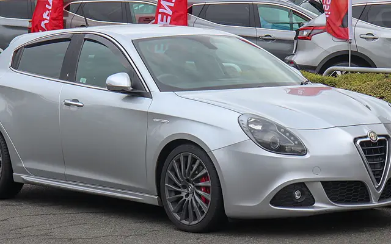

Par Motor › Precios por modelo › Alfa Romeo Giulietta
Precio de segunda mano · noviembre de 2026¿Cuánto vale un Alfa Romeo Giulietta de segunda mano?

Precio justo estimado de un Alfa Romeo Giulietta usado en España, año por año, con los kilómetros normales para su edad y en buen estado: de 6.300 € a 12.300 €. Para tasar el tuyo con sus kilómetros reales y su estado, usa el tasador gratis.
Precios del Alfa Romeo Giulietta por año
Giulietta (2010–2020)
Precio de nuevo: 1.4 TB 120 CV, 21.000 € · 1.6 JTDm 105 CV, 22.000 € · 1.4 TB MultiAir 150 CV, 23.500 €
| Año | Km normales | 1.4 TB 120 CV · Gasolina | 1.6 JTDm 105 CV · Diésel | 1.4 TB MultiAir 150 CV · Gasolina |
|---|---|---|---|---|
| 2020 | 95.000 km | 11.000 € | 11.900 € | 12.300 € |
| 2019 | 100.000 km | 10.200 € | 11.700 € | 11.500 € |
| 2018 | 100.000 km | 9.900 € | 11.400 € | 11.100 € |
| 2017 | 100.000 km | 9.600 € | 11.100 € | 10.700 € |
| 2016 | 100.000 km | 9.300 € | 10.400 € | 10.400 € |
| 2015 | 100.000 km | 8.900 € | 9.600 € | 10.000 € |
| 2014 | 100.000 km | 8.600 € | 8.800 € | 9.600 € |
| 2013 | 100.000 km | 8.000 € | 8.200 € | 9.000 € |
| 2012 | 100.000 km | 7.400 € | 7.500 € | 8.300 € |
| 2011 | 100.000 km | 6.900 € | 7.000 € | 7.700 € |
| 2010 | 100.000 km | 6.300 € | 6.400 € | 7.100 € |
Kilómetros normales: 15.000 al año en gasolina, híbridos y eléctricos, y 20.000 en diésel, con un máximo de 100.000 km (por encima no tasamos: el precio depende demasiado del historial de cada coche). Cifras redondeadas a 100 €.
Preguntas frecuentes
¿Cuánto vale un Alfa Romeo Giulietta de segunda mano?
Según el año, la versión y los kilómetros, un Alfa Romeo Giulietta usado vale hoy de 6.300 € a 12.300 € en España. El más barato de nuestra tabla es un 1.4 TB de 2010 (6.300 €) y el más caro un 1.4 TB MultiAir de 2020 (12.300 €). Son precios justos estimados entre particulares y profesionales, con los kilómetros normales para su edad y en buen estado.
¿Cuánto valor pierde un Alfa Romeo Giulietta al año?
Con unos años encima, un Alfa Romeo Giulietta pierde alrededor de un 3 % de su valor cada año (calculado sobre el 1.4 TB de la generación Giulietta). Los primeros años la caída es mayor y a partir de los 70.000 km se acelera.
¿Qué motorizaciones tiene el Alfa Romeo Giulietta?
En nuestra base de datos hay versiones gasolina y diésel, en 1 generación: Giulietta.
¿Cómo sé si me piden demasiado por un Alfa Romeo Giulietta?
Abre el tasador de Par Motor, elige el Alfa Romeo Giulietta, el año y los kilómetros reales, y escribe lo que te piden. Te diremos si está por debajo del precio justo (chollo) o por encima (caro). Es gratis y no pide registro ni matrícula.
Otros Alfa Romeo
Compara su coste real
El precio de compra es solo una parte. Mira cuánto te costaría al mes con combustible, seguro, neumáticos, mantenimiento y lo que pierde de valor.
Abrir el comparador →